Tweet
- Tweet, pagina attuale.
- Tweet e risposte
- Contenuti
Hai bloccato @usagi_anime
Vuoi davvero vedere questi Tweet? Procedendo non sbloccherai @usagi_anime
-
「エイプリルフールCD」発売を記念してただ今、2015年公開の魔法少女チノのエイプリルフールHPが復刻公開中♪こちら4/18 0:00にて次のエイプリルフールHPページに変わりますので、まだご覧になっていない方はぜひアクセスしてださい☆お見逃しなく！https://gochiusa.com/
#gochiusapic.twitter.com/9LhWLx2HRJ Grazie, ne terremo conto al fine di migliorare la tua cronologia. AnnullaAnnulla
Grazie, ne terremo conto al fine di migliorare la tua cronologia. AnnullaAnnulla -
【4/22 エイプリルフールCD発売記念Twitterクイズ②！】公式Twitterアカウントをフォロー＆引用リツイートでクイズの答えを回答頂いた方に抽選で「特製ポストカード5枚セット」を422名様にプレゼントします♪(リプライでの回答は無効になります）今回の問題はコチラ！
#gochiusapic.twitter.com/Olps9UZCxW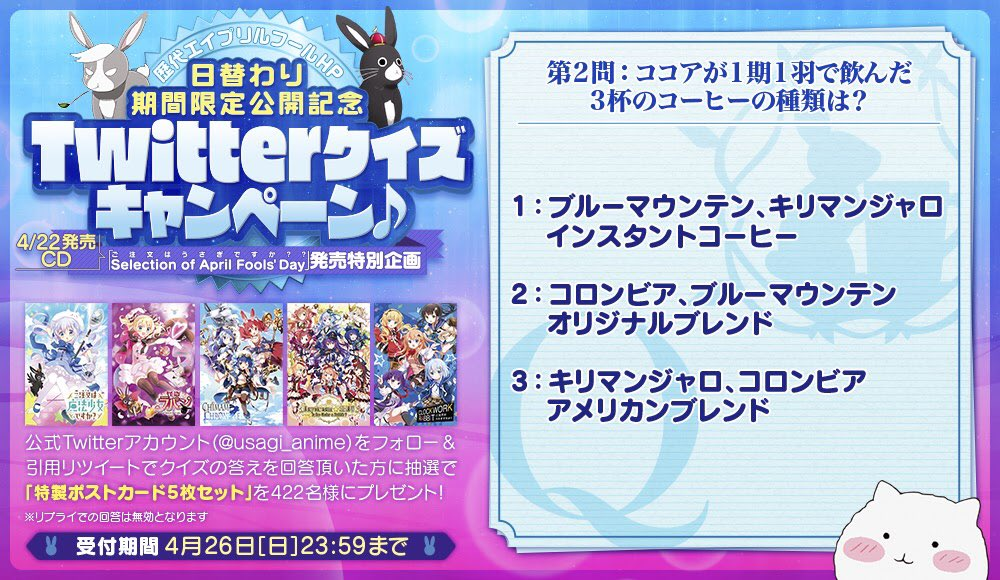Grazie, ne terremo conto al fine di migliorare la tua cronologia. AnnullaAnnulla -
4/22の「エイプリルフールCD」発売を記念して公式Twitterアカウントをフォロー＆引用リツイートでクイズの答えを回答頂いた方に抽選で「特製ポストカード5枚セット」を422名様にプレゼント♪ 本日から全10問出題し1つでも正解すれば当たるチャンス☆今回の問題はコチラ！
#gochiusapic.twitter.com/unbAaE59hS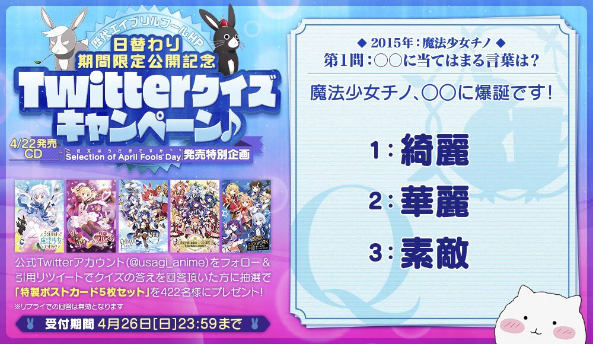Grazie, ne terremo conto al fine di migliorare la tua cronologia. AnnullaAnnulla -
「エイプリルフールCD」発売を記念して本日から特別企画として、これまでのエイプリルフールHPを日替わりで期間限定公開♪本日は2015年公開の魔法少女チノのエイプリルフールＨＰが復刻☆皆さまぜひアクセスして4/22のエイプリルフールCDの発売をお待ちください！https://gochiusa.com/
#gochiusapic.twitter.com/OtuFMScy05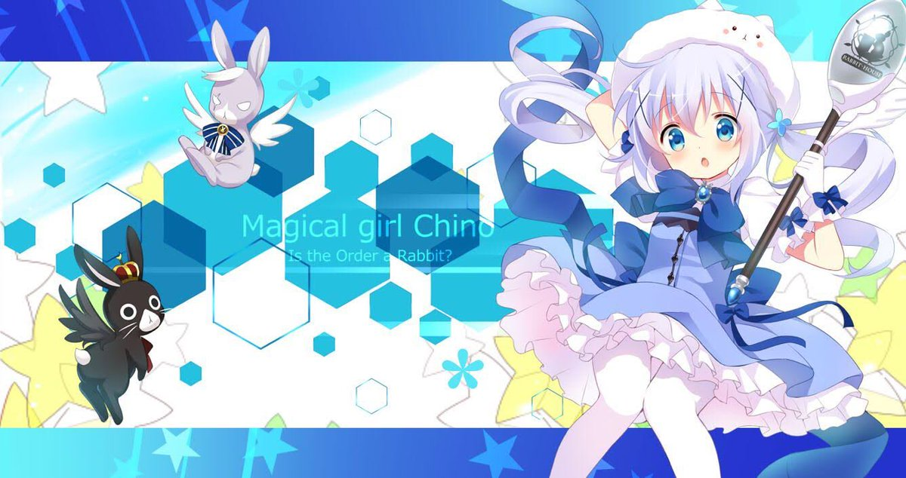Grazie, ne terremo conto al fine di migliorare la tua cronologia. AnnullaAnnulla -
TVアニメ『ご注文はうさぎですか？』 ha ritwittato
「ご注文はうさぎですか？？ Selection of April Fools' Day」は、 ４月２２日（水）発売！発売を記念して、これまでのエイプリルフールHPを日替わりで期間限定公開決定！詳しくは、この後、深夜０時のアニメ公式Twitterで！
#gochiusapic.twitter.com/zvz88BpR45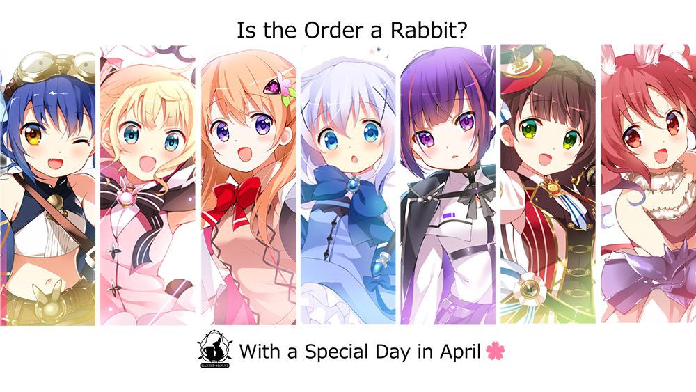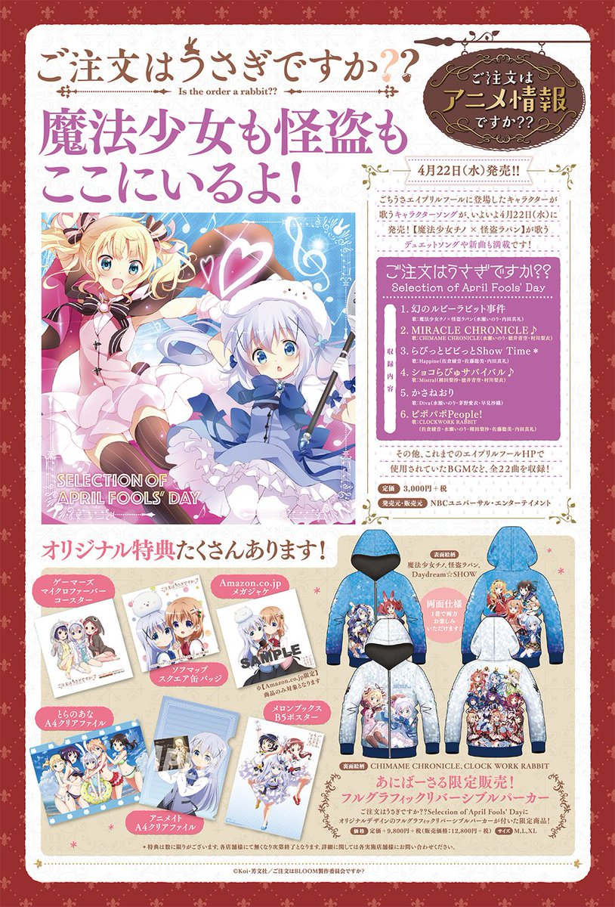Grazie, ne terremo conto al fine di migliorare la tua cronologia. AnnullaAnnulla -
TVアニメ『ご注文はうさぎですか？』 ha ritwittato
今月のきららMAX掲載「ご注文はうさぎですか？」は、 リゼのお話。…のはずなんですが、 このリゼの衣装を着た方はいったい？？
#gochiusapic.twitter.com/cD6PqfYtOA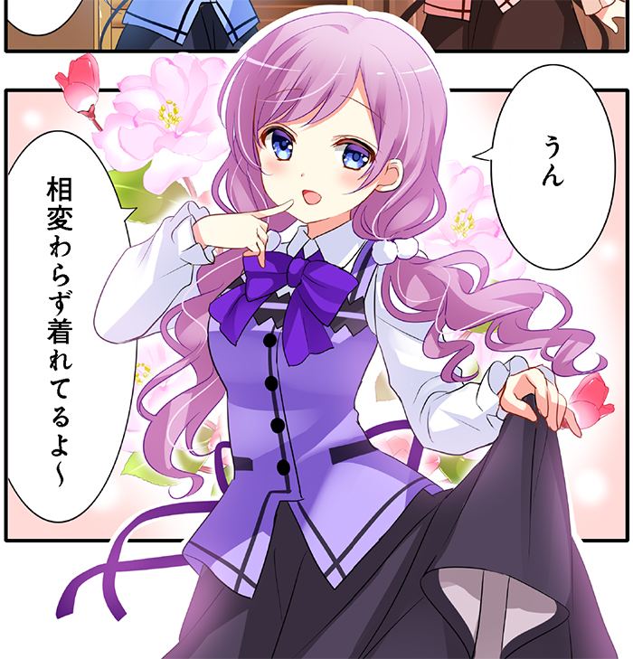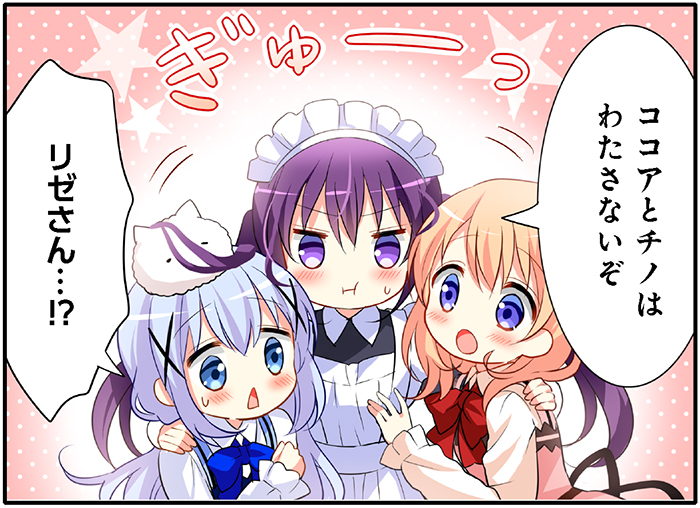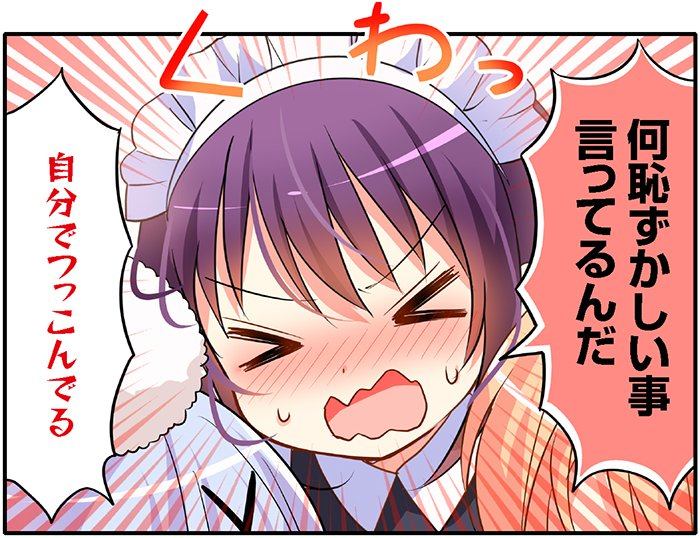Grazie, ne terremo conto al fine di migliorare la tua cronologia. AnnullaAnnulla -
TVアニメ『ご注文はうさぎですか？』 ha ritwittato
／ 4/12(日)～4/19(日)は ニコニコネット超会議2020
 ＼
期間中「超アニメセレクション一挙放送」を実施します！
本日4/16(木)19:00～
「ご注文はうさぎですか？」全12話を一挙放送
＼
期間中「超アニメセレクション一挙放送」を実施します！
本日4/16(木)19:00～
「ご注文はうさぎですか？」全12話を一挙放送 視聴＆予約は
視聴＆予約は https://live.nicovideo.jp/watch/lv324990177 …
https://live.nicovideo.jp/watch/lv324990177 …
#ネット超会議2020pic.twitter.com/oNuY4G7x6q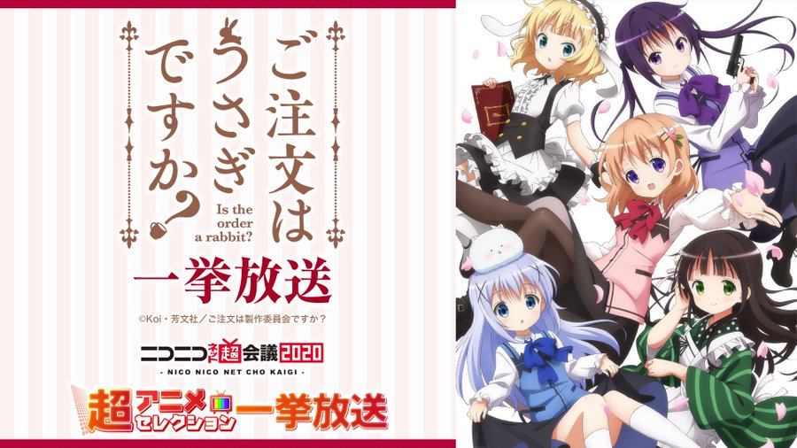Grazie, ne terremo conto al fine di migliorare la tua cronologia. AnnullaAnnulla -
BS11での ご注文はうさぎですか？ 第1羽「ひと目で尋常でないもふもふだと見抜いたよ」の再放送をご覧いただきありがとうございました☆引き続き次週 第2羽「小麦を愛した少女と小豆に愛された少女」もお楽しみに♪
#gochiusapic.twitter.com/Z42LDhIkxWGrazie, ne terremo conto al fine di migliorare la tua cronologia. AnnullaAnnulla -
この後、25:00からBS11にていよいよ「ご注文はうさぎですか？」第1羽の再放送です！かわいさをたっぷりブレンドしたお時間をお届けします♪ ぜひご覧ください☆
#gochiusapic.twitter.com/31ZNEHRes4Grazie, ne terremo conto al fine di migliorare la tua cronologia. AnnullaAnnulla -
【本日締切！】アニメユニバーシティコープのサイトにて受付中のAnimeJapan 2020の 「ご注文はうさぎですか？？ 」ブースで販売予定だったグッズの2次受注は本日17：59までです☆受付終了の商品もございますのでこのチャンスをお見逃しなく♪ http://au-coop.ecq.sc
#gochiusapic.twitter.com/L9JFshDGsN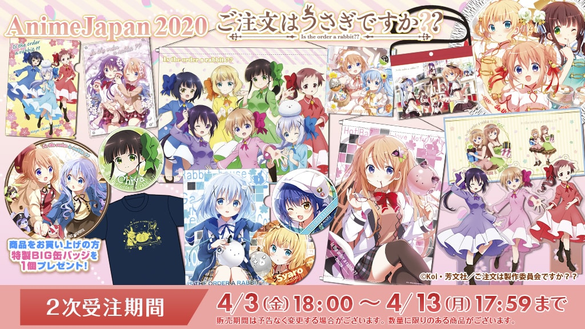Grazie, ne terremo conto al fine di migliorare la tua cronologia. AnnullaAnnulla -
TVアニメ『ご注文はうさぎですか？』 ha ritwittato
／ 「ラビットハウス」へようこそ ＼ 4月13日は
#喫茶店の日 『ご注文はうさぎですか？？』
かわいすぎる店員さんたちに
会いに行きませんか？
『ご注文はうさぎですか？？』
かわいすぎる店員さんたちに
会いに行きませんか？ おすすめはリゼのラテアート
おすすめはリゼのラテアート
#gochiusa@usagi_animeGrazie, ne terremo conto al fine di migliorare la tua cronologia. AnnullaAnnulla -
本日、4月13日は「喫茶店の日」ということで、ココア、チノ、リゼが働く喫茶店「ラビットハウス」へようこそ♪
#gochiusapic.twitter.com/Y8gNgEk4tWGrazie, ne terremo conto al fine di migliorare la tua cronologia. AnnullaAnnulla -
明日、4月13日25時からいよいよBS11にて「ご注文はうさぎですか？」第1羽の再放送がスタート♪ TVアニメ第3期放送の前にぜひかわいい「ごちうさ」を毎週お楽しみください☆
#gochiusapic.twitter.com/3RtpWujCVm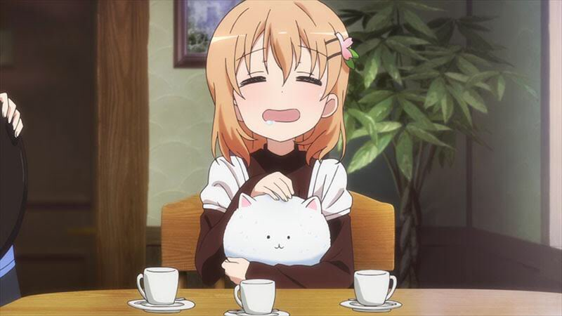Grazie, ne terremo conto al fine di migliorare la tua cronologia. AnnullaAnnulla -
本日、4月12日は「パンの日」という事でベーカリー保登のおいしいパンを召し上がれ♪
#gochiusapic.twitter.com/VhoQKUjZagGrazie, ne terremo conto al fine di migliorare la tua cronologia. AnnullaAnnulla -
【締切間近】アニメユニバーシティコープのサイトにて受付中のAnimeJapan 2020の 「ご注文はうさぎですか？？ 」ブースで販売予定だったグッズの2次受付は4月13日(月）17：59までです！受付終了の商品もございます。ぜひチェックしてみてください☆ http://au-coop.ecq.sc
#gochiusapic.twitter.com/0olRCYf7RY Grazie, ne terremo conto al fine di migliorare la tua cronologia. AnnullaAnnulla
Grazie, ne terremo conto al fine di migliorare la tua cronologia. AnnullaAnnulla -
この後、21:30からAT-Xにて「ご注文はうさぎですか？」の第2羽が放送です！ぜひかわいい時間をお楽しみください♪
#gochiusapic.twitter.com/UIcijKJhMW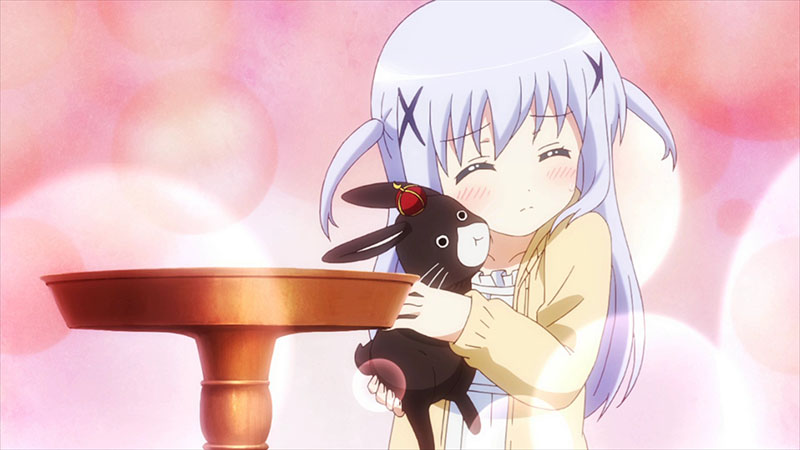Grazie, ne terremo conto al fine di migliorare la tua cronologia. AnnullaAnnulla -
TVアニメ『ご注文はうさぎですか？』 ha ritwittatoココアとガッツポーズ♡
4月11日は
#ガッツポーズの日 最高に癒される
最高に癒される ココアのテヘペロガッツポーズを見るには
『ご注文はうさぎですか？？ ～Dear My Sister～』をチェック
今日はココアに
＼まかせなさいっ
ココアのテヘペロガッツポーズを見るには
『ご注文はうさぎですか？？ ～Dear My Sister～』をチェック
今日はココアに
＼まかせなさいっ ／
／
#gochiusa@usagi_animeGrazie, ne terremo conto al fine di migliorare la tua cronologia. AnnullaAnnulla -
本日4月11日は「ガッツポーズの日」です！ガッツポーズと言えばモカ＆ココアのこのシーン♪
#gochiusapic.twitter.com/ZEASmL48rjGrazie, ne terremo conto al fine di migliorare la tua cronologia. AnnullaAnnulla -
TVアニメ『ご注文はうさぎですか？』 ha ritwittato
今日4月10日は「ご注文はうさぎですか？？」のココアちゃんのお誕生日 ご好評にお応えし、「ご注文はうさぎですか？？ ココア バースデーセット」の追加注文をスタートしました！ 前回、お申込みできなかったみなさん、この機会にぜひどうぞ！ ご注文はこちら https://iyec.omni7.jp/detail/4549167951870 …
#gochiusapic.twitter.com/7ROak4zjzXGrazie, ne terremo conto al fine di migliorare la tua cronologia. AnnullaAnnulla -
TVアニメ『ご注文はうさぎですか？』 ha ritwittato
【ご注文はうさぎですか？？】ココアとチノの描きおろしイラストがフィギュアに！？ ただ今、あにばーさるオリジナル特典付きのフィギュア企画が進行中♪♪ 発売は2020年冬を予定しています！続報をお楽しみに♪
#あにばーさる#gochiusapic.twitter.com/RJ8eMYBoFx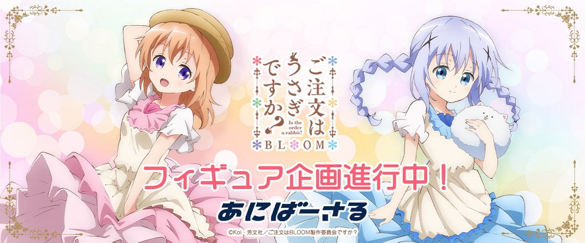Grazie, ne terremo conto al fine di migliorare la tua cronologia. AnnullaAnnulla
Il caricamento sembra essere lento.
Twitter potrebbe essere sovraccarico o avere un problema temporaneo. Riprova o visita Twitter Status per ulteriori informazioni.